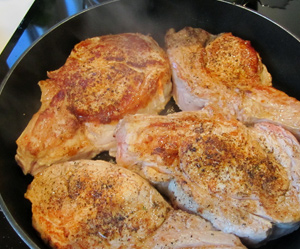

Alle Rezepte
Kalbskotelette mit Bärlauchknöpfli
5,5 von 6

Foto vom Abend
Gekocht am Montag, 18. April 2011
Montagsplausch Nr. 302. Der Abend hiess «Luzians Weinfest».
- Wetter
- Schön, 20 Grad
- Getränke
- Deidesheimer Mäushöhle S
- Riesling trocken, 2009
- er, Geheimer Rat Dr. von Bassermann-JordanAmarone, Monte Faustino, 2004
- Rieslaner Auslese, Geheimer Rat Dr. von Bassermann-Jordan
- Am Tisch
- Luzian, Craig, Gäbi und Beni
- Dazu gab es